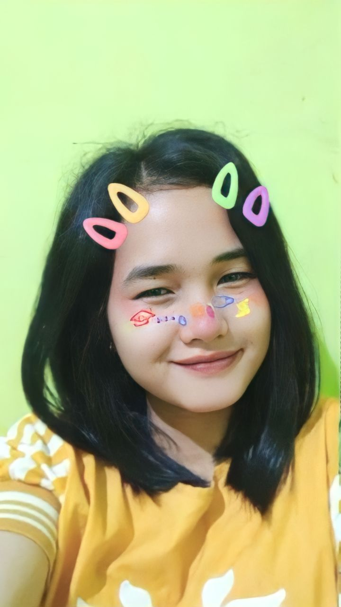

Happy Birthday! 🎂
Selamat ulang tahun, pacarnya Jisung! Semoga panjang umur dan sehat selalu. Tolong jangan tekan tombol merahnya.
Pasti nggak kaget 🗿
Intinya, selamat bertambah usia, Brok. Ini slide aibmu.

Selamat ulang tahun, pacarnya Jisung! Semoga panjang umur dan sehat selalu. Tolong jangan tekan tombol merahnya.
Intinya, selamat bertambah usia, Brok. Ini slide aibmu.